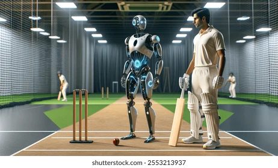

the future, robots will be able to play football just like humans. These robots use advanced sensors, cameras, and artificial intelligence to move, pass, and shoot the ball accurately. Some robots are already designed to play in competitions like RoboCup, where they compete in football matches against each other. Playing football with robots can help improve technology, teamwork programming, and strategy skills. In the future, robot football matches may become popular sports events, attracting fans from all over the world.

In the year 2030, cricket has taken on a futuristic twist, where humans and robots play together on the same field. The stadiums are filled with excitement as spectators watch this unusual match. Robots bowl with incredible speed and accuracy, calculating the exact trajectory of the ball, while human batsmen rely on instinct, experience, and quick reflexes to hit the ball. Each delivery is a challenge, as humans must anticipate and adapt to the precision of their robotic opponents. Fielding is another spectacle in this hybrid game. Robots can move at lightning speed, catching balls that seem impossible for human players to reach. However, humans use clever strategies, teamwork, and unpredictable movements to outsmart the robots. The blend of precision and creativity makes the game thrilling, as every run, catch, and wicket becomes a test of both intelligence and skill.